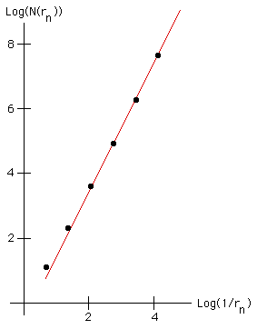

| Plot the points | ||||||||||||||||||
| ||||||||||||||||||
| (the graph shows a greater range, and more widely spaced, points than these) and see if they lie approxiamtely on a straight line of slope 2. | ||||||||||||||||||
|  | ||||||||||||||||||
| Indeed, the points do appear to lie approximately along a straight line of slope 2. The fit is not perfect because the squares cover more than the triangle. |